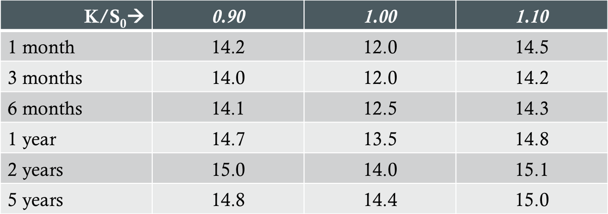

Introduction
Definition: A plot of the implied volatility of an option with a certain life as a function of its strike price
Volatility Smile for Calls and Puts
- p + S0e-qT = c + Ke-rT
- For a given strike price and maturity, the implied volatilities of a European put and call option will be equal
Foreign Currency Options
- In practice, an option's implied distribution has heavier tails and a higher peak than the lognormal distribution assumed under Black-Scholes
- Why?
- The volatility of exchange rates are not constant
- Assets exhibit frequent "jumps" in price
Equity Options
- Volatility skew
- Volatility decreases as strike price increases
Volatility Term Structure
- Low short-dated volatility -> implied volatility increases with maturity
- High short-dated volatility -> implied volatility decreases with maturity
- Illustrative volatility surface table:
